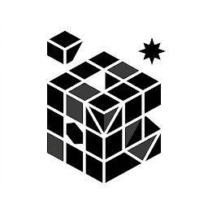

O estilo do canal, pronto para o seu agente.
Ele passa a saber o que é boa hierarquia, composição limpa e movimento com intenção, e mantém o mesmo visual do primeiro ao último vídeo.

Sinal de MáquinaFundo branco, texto preto, motion que explica. Cole o roteiro no Codex, no Claude Desktop, no Hermes Agent ou em agentes parecidos e ele entrega o MP4 no seu computador, no estilo do Sinal de Máquina.
Faz um vídeo desse roteiro: fundo branco, texto preto, motion minimalista, 9:16.
video-final.mp4 pronto para revisar
R$ 67,90 uma vez. 7 dias de garantia.
Precisa de um computador. É ele que renderiza o vídeo.
trechos de um vídeo de exemplo cenas ilustrativas
o jeito antigo
Abrir o editor, importar, cortar, criar cada animação na mão, exportar, descobrir o erro e voltar tudo.
o jeito novo
Você escreve o que quer dizer. O agente faz o trabalho pesado. Você assiste, pede o ajuste e aprova.
Tipografia que conduz o olhar. Interfaces que se explicam sozinhas. Movimento com intenção. Do primeiro ao último frame, no mesmo estilo.
O tema do exemplo é Browser Use, só como assunto. O que você aprende aqui é o estilo, não a automatizar navegador. O resultado varia com o roteiro, o modelo de IA e os seus ajustes.
Quero esse estilo nos meus vídeosAbra o Codex, o Claude Desktop, o Hermes Agent ou parecido no seu PC e adicione o material que você recebe na compra.
Cole o texto e diga o formato e o ritmo. O agente monta cenas, tipografia e transições no estilo minimalista.
Peça ajustes em português simples: “mais rápido”, “troque essa frase”. Quando gostar, ele renderiza o MP4.
Sem programa de edição pesado, sem curso de 40 horas, sem decorar atalhos.
O vídeo é renderizado no seu PC, não na nuvem de ninguém.
Codex, Claude Desktop, Hermes Agent ou similar. A recomendação do autor é o Claude Opus 5.5.
Uma ideia que você queira explicar. O resto é com o agente.
A assinatura do agente ou da IA é paga à parte e não está nos R$ 67,90. Chat no navegador, como ChatGPT ou Claude na web, não garante renderizar o vídeo. Por isso o caminho é um agente rodando no seu PC.
Ele passa a saber o que é boa hierarquia, composição limpa e movimento com intenção, e mantém o mesmo visual do primeiro ao último vídeo.
Pare de escrever “faz um vídeo bonito”. Use pedidos prontos e adapte ao seu roteiro.
O passo a passo na prática, para você ver a primeira entrega acontecer sem adivinhar nada.
Um pagamento. Sem mensalidade do produto. Você testa, e se não fizer sentido, pede o dinheiro de volta.
Peça o reembolso em até 7 dias após a compra, pelo canal indicado no checkout ou na área de membros.
motion minimalista com IA
Pagamento único, sem assinatura do produto.
Você será levado ao checkout seguro da Kiwify para finalizar.
Precisa de um PC e de um agente de IA. A assinatura da IA não está inclusa.
Não. O produto faz um estilo só: vídeos minimalistas de fundo branco, texto preto e motion limpo, como os do Sinal de Máquina. Não serve para vlog, gameplay, corte de live ou vídeo com pessoas gravadas.
Não precisa saber editar. A ideia é dirigir o agente com palavras. Como o agente roda no seu PC, pode haver alguma instalação ou ajuste, e a aula mostra o caminho. Você sempre revisa o resultado.
Com agentes de IA que rodam no seu computador, como Codex, Claude Desktop e Hermes Agent, e outros parecidos. Quanto mais capaz o modelo por trás, melhor o resultado. O autor recomenda o Claude Opus 5.5.
Não é o caminho recomendado. Chats na web variam conforme modelo e plano, e não garantem renderizar um MP4. Use um agente no seu PC.
Pode ter. O valor cobre apenas o material. Assinaturas de IA, créditos e eventuais serviços são contratados à parte.
O exemplo mostra o estilo e o nível de acabamento, não uma promessa individual. O resultado depende do roteiro, do modelo, da sua direção e dos ajustes. Não há prazo fixo de produção.
Após a confirmação da compra, siga as instruções de acesso à área de membros mostradas no checkout. Tudo é entregue lá, não nesta página. O reembolso pode ser pedido em até 7 dias após a compra.